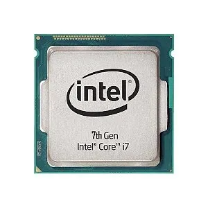
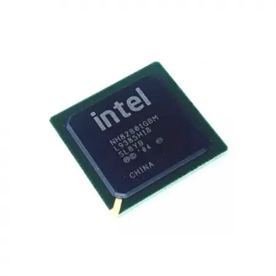

Componentes da Placa Mãe
-

Socket do Processador: Onde o processador é instalado.
-
 Slots de Memória RAM: Conectores para módulos de memória RAM.
Slots de Memória RAM: Conectores para módulos de memória RAM.
-

Chipset: Controla a comunicação entre o processador e outros componentes.
-
 Slots de Expansão: Para placas adicionais, como placas de vídeo e de som.
Slots de Expansão: Para placas adicionais, como placas de vídeo e de som.
-
 Conectores SATA: Para conectar discos rígidos e SSDs.
Conectores SATA: Para conectar discos rígidos e SSDs.
-
 Conectores de Alimentação: Para fornecer energia à placa-mãe e aos componentes.
Conectores de Alimentação: Para fornecer energia à placa-mãe e aos componentes.
-
 Portas USB: Para conectar dispositivos externos.
Portas USB: Para conectar dispositivos externos.
-
 Saídas de Vídeo: Para conectar monitores (HDMI, DisplayPort, etc.).
Saídas de Vídeo: Para conectar monitores (HDMI, DisplayPort, etc.).
-
 BIOS/UEFI: Firmware que inicializa o hardware e gerencia as configurações do sistema.
BIOS/UEFI: Firmware que inicializa o hardware e gerencia as configurações do sistema.
Especificações da Placa Mãe
| Especificação |
Detalhes |
| Formato |
ATX |
| Socket |
AM4 |
| Slots de RAM |
4 x DDR4 |
| Conectores SATA |
6 x SATA III |
| Portas USB |
4 x USB 3.0, 2 x USB 2.0 |